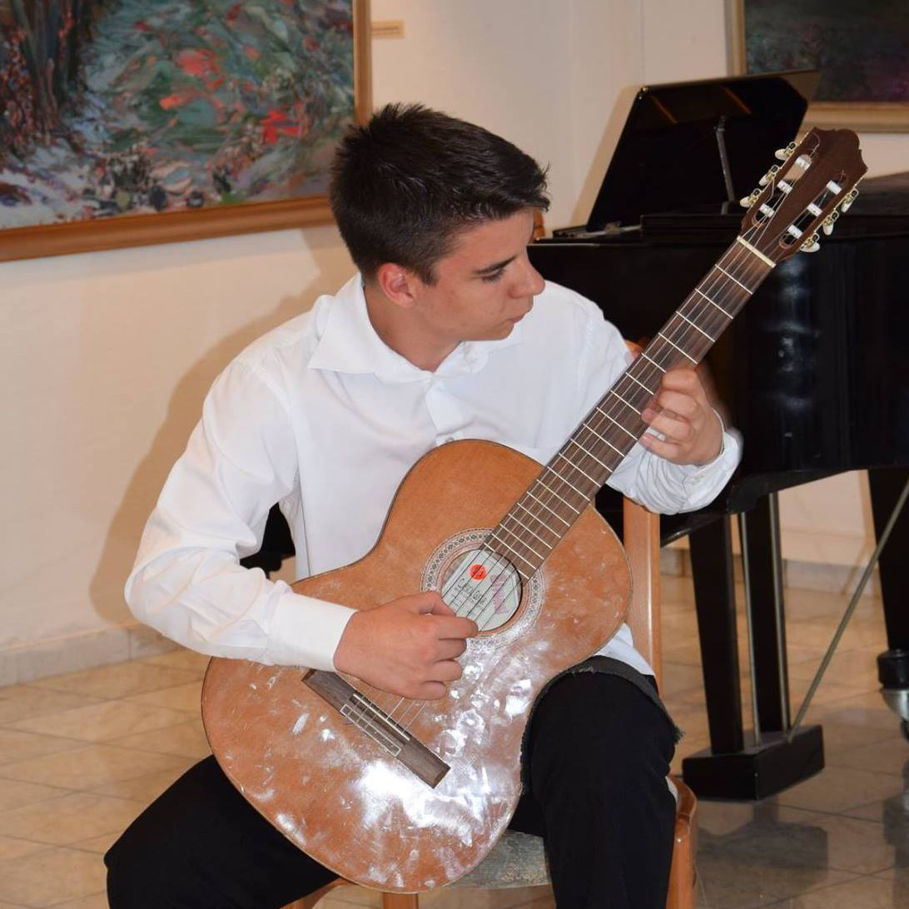
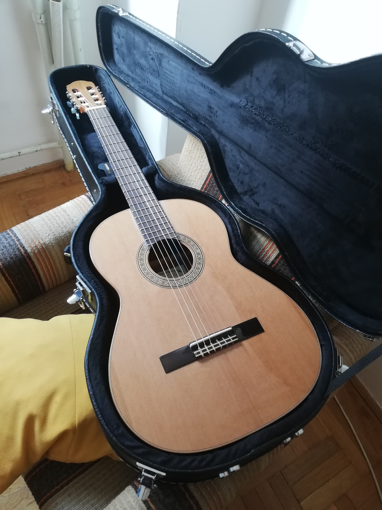

Zeneskolai tanulmányaimat 2008-tól kezdve végeztem a Nyergesújfalui Szabolcsi Bence Zeneiskolában. Ott először furulyán játszottam egy évig, majd egy évtizeden keresztül gitárszakosan folytattam tanulmányait. Kisebb szünet után sikerült egy új gitárt vennem amivel azóta is szívesen játszok.
 Egy kis hallgatnivaló gitár zene.
Capricho Arabe-Tavi Jinariu Leo Brouwer:Un dia de Noviembre by Stefan Schmitz Telemann:Concerto for 4 solo guitars Isaac Albeniz:Asturias(Leyenda)-played by John Williams Francisco Tárrega - Variaciones sobre "El Carnaval de Venecia" de Paganini